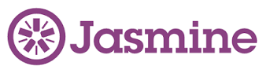
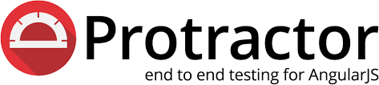
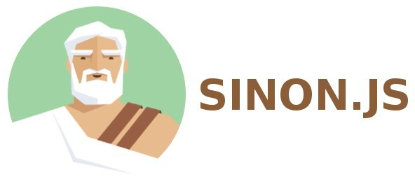

3. The Angular Testing Tools-Toolchain
3.1. Testing Tool categories
Angular testing toolchain consists of various tools categorized as follows:
- Assertion Library: Define test cases and conditions (e.g., Jasmine, Chai)
- Test Runner: Execute tests and summarize results (e.g., Karma, Mocha)
- End-to-End testing tools: Perform complete application tests (e.g., Protractor)
- Headless Browser: Simulates browser interaction without GUI (e.g., Headless Chrome, Puppeteer)
Testing Tools
We can test Angular applications using various tools and frameworks that streamline the process:
- Jasmine
- Karma
- Protractor
- PhantomJS
- Istanbul
- Chai
- Sinon
- Mocha
- Angular Testing Utilities
3.2.1. Jasmine

Jasmine is an open-source BDD framework for testing JavaScript, integral to Angular's testing ecosystem:
- Core framework for unit testing in Angular
- Provides functions like describe(), it()
- Dependency-free, does not require a DOM
- Website URL
3.2.2. Karma
Karma is a test runner tool specifically designed for Angular applications:
- Runs and executes unit tests during Angular development
- Shows live results of test outcomes
- Supports various browsers and headless testing
- Website URL
3.2.3. Protractor

Protractor is an end-to-end testing framework tailored for Angular:
- Tests the complete application flow from a user's perspective
- Runs E2E tests to simulate user interactions
- Website URL
3.2.4. PhantomJS
PhantomJS is a headless browser used for automating web page interactions:
- Fast and supports various web standards
- Can take screenshots and automate page actions
- Development currently suspended
- Website URL
3.2.5. Istanbul
Istanbul is used for code coverage reporting within the Angular testing framework:
- Integrates with Karma for reporting coverage
- Website URL
3.2.6. Sinon

Sinon provides standalone test spies, stubs, and mocks for JavaScript:
- Works with any unit testing framework
- No external dependencies
- Website URL
3.2.7. Chai
Chai is an assertion library for node and browser testing, compatible with various frameworks:
3.2.8. Mocha
Mocha is a flexible test runner for JavaScript:
- Supports synchronous and asynchronous testing
- Flexible reporting and test execution
- Website URL
3.2.9. Angular Testing Utilities
Angular Testing Utilities help create comprehensive test environments for Angular applications:
- Includes Angular TestBed for module setup and interaction testing
- Essential for testing components and services
In this course/tutorial, we mainly focus on Jasmine for writing tests, Karma for running tests and generating reports, and Angular TestBed for comprehensive interaction and functionality testing.